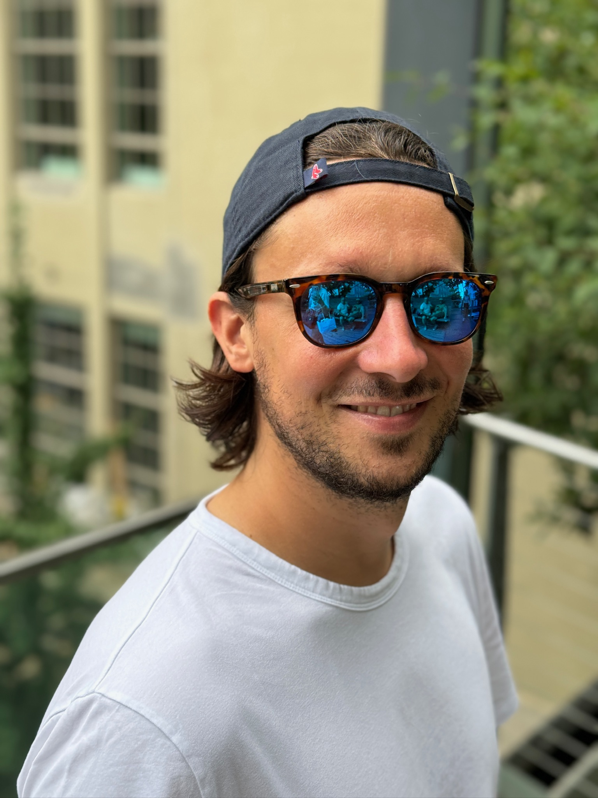

Marcello Ziotti
Contacts
- 🌐 LinkedIn: https://www.linkedin.com/in/marcelloziotti
- 📫 Email: marcello.ziotti@gmail.com
Work
Intel Corporation - Ferrara (Italy) - (Apr 2022, Present)
Simulation and Modeling Engineer - Simics Simulator - Technical Lead
Building on my experience in single-IP simulation, I transitioned to SoC-level responsibilities such as interconnect design update, end-to-end usecases ownership, improvements to build systems, testing frameworks, and quality assurance processes. These contributions led to my promotion to Technical Lead, a role in which I guide colleagues and lead initiatives targeting to improve Intel's SoC simulation platforms.
Key Contributions:
- 💻 Pantherlake Intel IOSF Sideband Topology Update & First Boot: Modeled and validated an interconnect network to enable multi-die, multi-domain communication. Solved challenges with multicast messaging using smoke platform initialization tests. Drove together with Bios/FW and OS team first SoC boot to UEFI shell and Windows OS.
- 🚀 Build System Modernization: Spearheaded the transition from Make to CMake with Ninja, reducing build times of Simics SoCs platforms by 70% (from 50 to 15 minutes). Coordinated with all IP teams to align on the new build process, improving developer efficiency and CI pipelines.
- ✅ Unit Testing Framework for Simics IPs: Developed a unit test framework for Simics models, enabling early issue detection before platform integration. Ensured adoption by collaborating with technical leads and making unit testing mandatory for integration.
- 🔧 Code Quality and TDD Integration: Integrated code coverage monitoring into GitHub workflows to prevent test coverage regressions. Advocated for and implemented Test-Driven Development (TDD) practices, driving a cultural shift towards robust and maintainable code. Currently adopted by 30 IPs, achieving coverage above 90%.
- 🤝 Technical Leadership: Promoted to Technical Lead for contributions to simulation platforms and organizational efficiency. Mentored new hires and streamlined initiatives such as CMake migration, unit testing framework Simics models and code coverage check integrated into GitHub.
Intel Corporation - Munich (Germany) - (Jul 2018, Apr 2022)
Simulation and Modeling Engineer - SystemC and Simics Simulator
When I transitioned into simulation modeling at Intel, I began working on SystemC IPs such as Audio and Camera models for Alderlake and Meteorlake Simics platforms, culminating with cross-team tasks on SystemC models like the Intel IOSF Sideband Interface library update. Over time, I transitioned to developing a brand new IP using Device Modeling Language (DML), taking on full end-to-end ownership. This involved collaborating with BIOS, firmware, software, and OS teams to enable use cases and validate functionality. My work culminated in a strong and ongoing partnership with Microsoft, fostering cross-team collaboration that continues to deliver impactful results.
Key Contributions:
- 🔈 Audio IP and Hardware Communication Interfaces (Meteoralake): Evaluated with architect teams the integration of embedded system interfaces such as I2C, I3C, SPI, UART to the Audio IP Simics SystemC model.
- 🚀 Build System Modernization: Migrated the Audio IP build system from Make to CMake, achieving a 70% speedup in build times.
- 🔧 Intel IOSF Sideband Interface SystemC Library Update: Partnered with the Simics Simulator team the upgrade of the core Intel IOSF Sideband Interface SystemC library to meet new architecture specifications.
- 📷 Camera IP 3rd Party Integration (Meteorlake): Integrated into a Simics SystemC model the Camera SystemC model developed by the IP team. Owned the end-to-end Simics validation.
![lock]() NVMe Data Encryption Modeling (Lunarlake): Created brand new Simics DML (Device Modeling Language) model responsible of NVMe data encryption. Adopted Test-Driven Development (TDD) and validated functionality with the BIOS team using UEFI applications shifting left successfully the overall FW/SW/OS readiness.
NVMe Data Encryption Modeling (Lunarlake): Created brand new Simics DML (Device Modeling Language) model responsible of NVMe data encryption. Adopted Test-Driven Development (TDD) and validated functionality with the BIOS team using UEFI applications shifting left successfully the overall FW/SW/OS readiness.- 🤝 Collaboration with Microsoft: Running NVMe encryption flows on Simics helped Microsoft to detect and fix three critical bugs in the Windows OS pre-release. Microsoft found a great value in Simics SoC simuation, and the collaboration is continuing also for the upcoming SoCs like Pantherlake.
- ⚙️ Software Continuous Integration (SWCI) Initiative: Initiated the SWCI project to integrate and test BIOS/FW components alongside Simics SoC builds. Enabled early identification of firmware issues and streamlined the integration process to upcoming SoCs like Pantherlake.
Intel Corporation - Munich (Germany) - (Feb 2018, Jul 2018)
Design Verification Engineer
I began my journey at Intel by contributing to the cellular 5G chip design verification efforts, focusing on SystemVerilog and the UVM (Universal Verification Methodology) framework. This role involved both behavioral and performance/power validation, ensuring the chip met key design and functionality requirements. One of my primary tasks was the DMA backdoor access implementation, enabling efficient communication and validation of internal chip components.
Visiting Researcher at National University of Singapore (Jul 2017, Dec 2017)
Designed a programmable many-core architecture based on SystemC for high-throughput, low-latency LTE base stations. Focused on real-time physical layer processing using Software Defined Radio (SDR) technology. The project addressed the challenges of 10x throughput increases and latency reductions in 5G wireless standards, integrating RTOS design and realistic 5G applications for end-to-end performance evaluation.
Education
- 🎓 MSc in Electrical and Telecommunication Engineering, University of Ferrara (Italy)
- 🎓 BSc in Electrical Engineering, University of Ferrara (Italy)
- 🛠️ Projects:
- Network-On-Chip Architecture Combining Spatial and Temporal Partitioning (MsC Thesis, SystemC): Evaluated performance and isolation in many-core platforms analyzing engineering trade-offs like reduced memory access delays.
- RTOS-Based Driver for a Wi-Fi Gateway (Bachelor Thesis, C/C++): Developed a driver integrating a Wi-Fi module with an ARM-based performing network scanning, SSID connection, and Wi-Fi packet exchange.
- Mixed-Signal Heart-Rate Monitor (VHDL): Designed a heart-rate monitor with SPO2 sensor, FPGA, and DAC converters integrated with Texas Instruments ASLKPRO Board.
- Orthogonal Frequency-Division Multiplexing (Matlab): Simulated a base station handling random user access, applying fairness algorithms for subcarrier allocation.
- Firewall Implementation (Python): Developed flow control, IP routing, and cryptographic protocols.
- FPGA Flash Programming (Quartus): Implemented an LPF filter on Altera FPGA.
- Power Amplifier for WLAN 802.11B (AWR Microwave Office): Designed a power amplifier meeting IEEE 802.11b specifications using AWR Microwave Office.
Skills
Core Competencies
- 🧩 Problem Solving & Initiative: Embrace challenges and tackle complex tasks by identifying and addressing inefficiencies. Proactively improve workflows when opportunities arise.
- 🛠️ Test-Driven Development (TDD) & Code Quality: Strong advocate for unit testing, code coverage, and Test-Driven Development, ensuring the highest standards of quality across all projects.
- 📄 Clear & Simple Code: Believe that great code is sincere, unadorned, and free of unnecessary complexity. Committed to writing clear, maintainable, and scalable code that teams can easily build upon.
- 🤝 Collaboration & Team Success: My achievements are rooted in the success of the team. I enjoy mentoring, sharing knowledge, and learning from others, fostering a culture of growth and improvement.
- ⚡ Adaptability & Versatility: Like to juggle among diverse tasks and open to explore new domains.
- ⚙️ Continuous Integration (CI) & DevOps Collaboration: Frequently collaborated with DevOps teams to enhance pipelines and practices for faster software deployment.
Languages & Technical Skills
- 💻 Technical Skills & Tools:
- Proficient: Python, Simics (System Simulation), DML & SystemC (Hardware Modeling), Git, CMake, Bash, Jenkins, GDB
- Experienced: C++, C, Make, Csh, VTune, Valgrind
- Familiar: VHDL, Verilog, SystemVerilog, QEMU, Assembly (ASM)
- 🌐 Languages: Italian (Native), English (Fluent), German (Intermediate), Spanish (Basic)